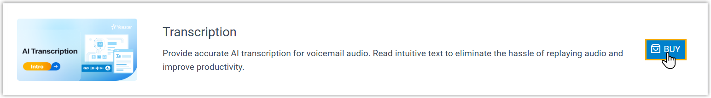
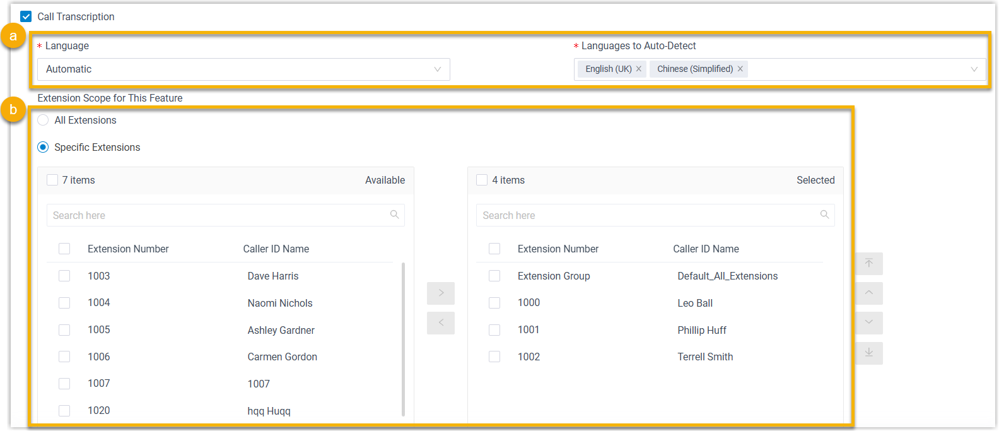

Enable AI Call Transcription
AI call transcription can transcribe calls between two parties into readable text in real-time and quickly generate call summaries. This topic describes how to enable AI call transcription.
Requirements
- Firmware: 83.20.0.x or later.
- Subscription:
- Subscribe to Enterprise Plan or Ultimate Plan to
ensure AI transcription is available.Note: You can get started with the AI transcription feature using a one-time free transcription minutes (120 munites for Enterprise Plan or 240 minutes for Ultimate Plan).
- Extend transcription minutes
as
needed by subscribing to the Transcription
service (Path: ).

- Subscribe to Enterprise Plan or Ultimate Plan to
ensure AI transcription is available.
Procedure
- Log in to PBX web portal, go to .
- Select the checkbox of Call Transcription to enable the feature.
- Configure call transcription settings:

- Set the
transcription language.
- Language: In the drop-down list, select the desired language in which calls will be transcribed.
- Languages to
Auto-Detect: If you set the
Language to Automatic, select the
desired languages for auto detection.
The system will automatically detect and transcribe call audios in the selected languages.
Note:- You can select up to 5 languages for auto-detection simultaneously.
- Only one region can be selected per language. For example, you cannot select both English (UK) and English (US) at the same time.
- In the Extension Scope for This Feature
section, specify which extensions / extension groups / departments
have access to the call transcription feature.
- All Extensions: All extensions can use this feature.
- Specific Extensions: Only selected extensions can use this feature.
- Set the
transcription language.
- Click Save.
Result
- The AI call transcription feature is enabled. The system will automatically
transcribe
call
audios into readable texts in the specified language in real-time.Note: System administrator can configure the call transcription language and mode (either automatic or manual) for extensions individually (Path: ). For more information, see Configure AI Call Transcription for an Extension.
- The system automatically monitors transcription usage and sends
notifications when specific capacity thresholds are reached:
- When transcription usage reaches 90% and 95% of the total capacity, the PBX sends a notification Your AI Transcription Usage is Reaching the Capacity Limit to notify relevant contacts.
- When the total capacity is fully used, the PBX sends a notification AI Transcription Limit Reached to notify relevant contacts.
Note: You can also check the usage details of AI transcription in call reports (Path: ).